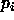
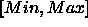
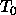
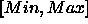
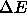

Simulated annealing is a more sophisticated method for finding the global minima of a error surface. In contrast to monte carlo learning only one weight or bias is changed at a learning cycle. Dependant on the error development and a system temperature this change is accepted or rejected. One of the advantages of simulated annealing is that learning does not get stuck in local minima.
At the beginning of learning the temperature T is set to

. Each training cycle consists of the following four steps.

.

with the probability p given by:

The three implemented simulated annealing functions only differ in the way the net error is calculated. Sim_Ann_SS calculates a summed squared error like the backpropagation learning functions; Sim_Ann_WTA calculates a winner takes all error; and Sim_Ann_WWTA calculates a winner takes all error and adds a term corresponding to the security of the winner takes all decision.